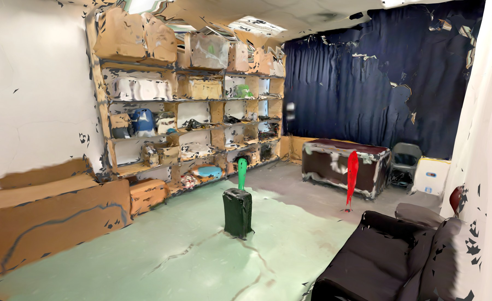
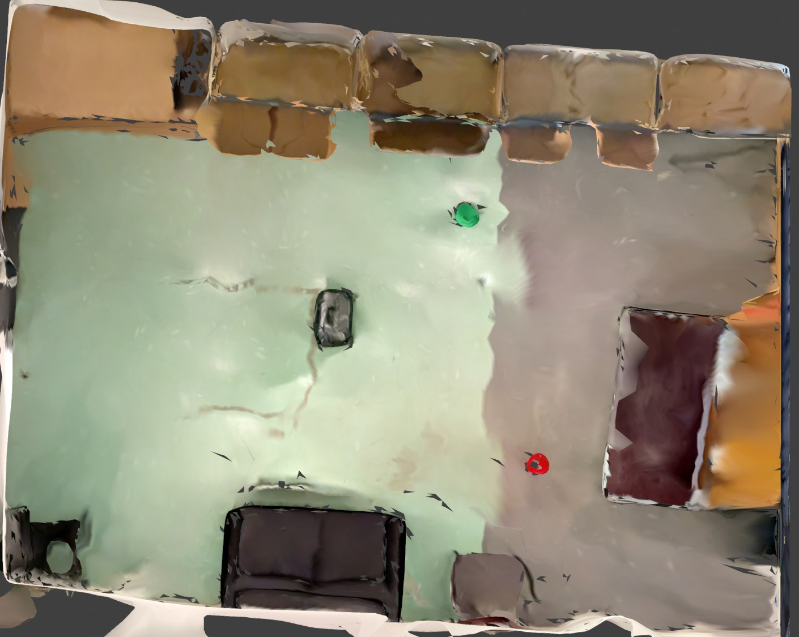
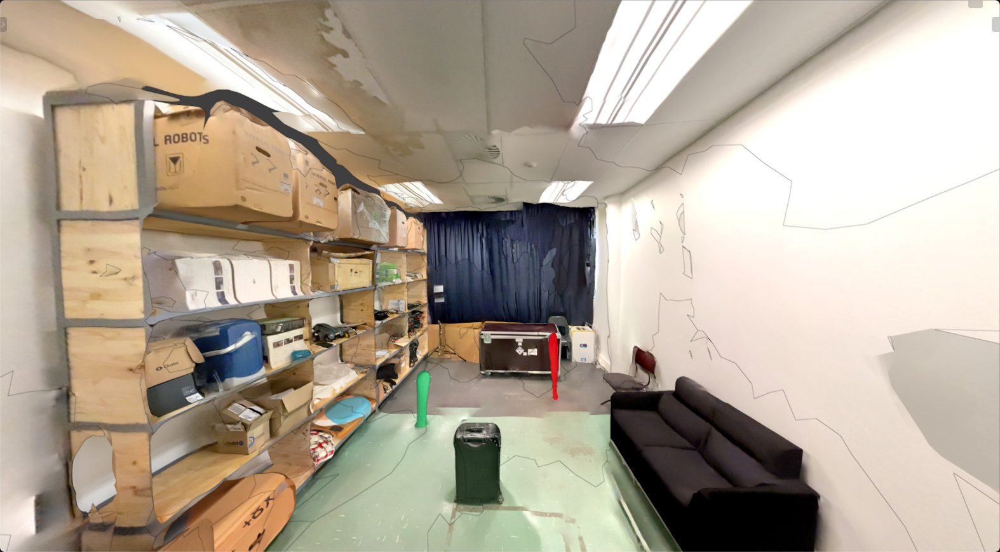
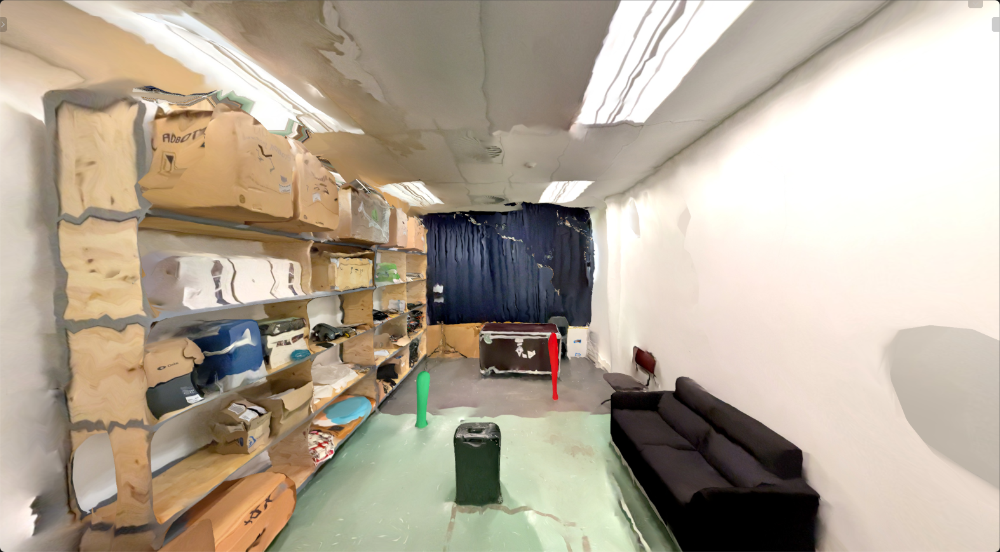
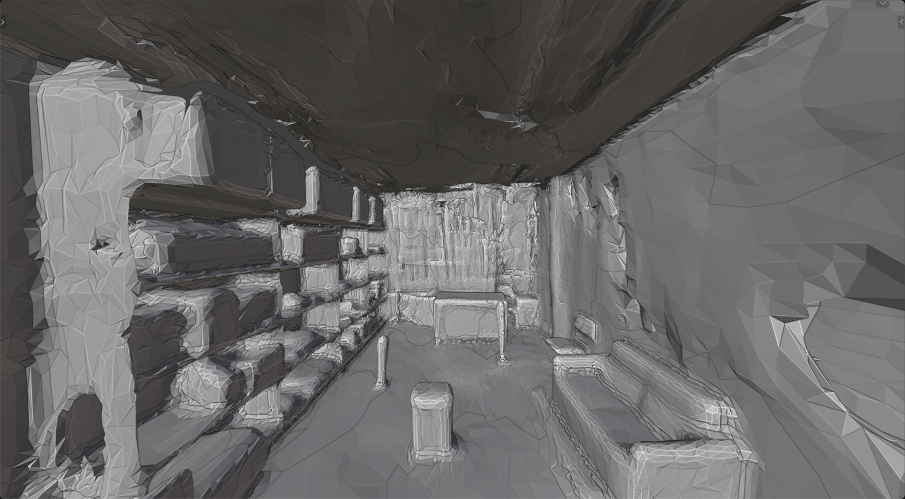
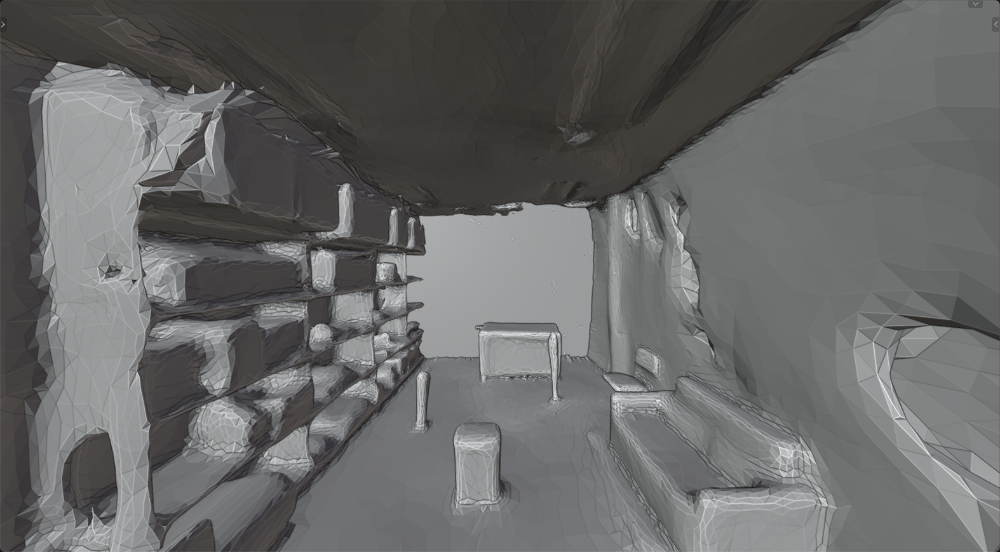

Inside the room
From aboveThe raw scan comes out tilted, with no sense of where the floor is and full of noise. One import step fixes all of it the same way every time:
Rotate it upright, square it to the walls and put the floor at height zero.
The walls faced outwards, so the depth camera would have seen straight through them.
Remove the loose floating fragments the scanner left around the room.
Take the noise out of the surfaces without shrinking the room.
Measure the mesh against the tape measurements before it is used.

Raw scan
Holes filled + smoothed
Raw mesh
Holes filled + smoothedBefore the long training run, a 5,000-step run in both rooms checks everything works end to end. It found four problems:
In the hand-made room Pepper started inside the corner walls and the simulator never got going. She now starts in open floor, at the same spot in both rooms.
In the scanned room every reset placed her up to 11 cm inside the uneven floor. Resets now land just above the floor.
The simplified collision floor had gaps she got caught in. Rebuilt with more detail: floor coverage went from 86% to 99%.
Changing the floor friction reloaded the room underneath her. The new room is now loaded before the old one is removed.
Re-run the short test with all four fixes, both rooms, with nothing else open on the PC.
The same command without --smoke: 300,000 steps in each room with
identical settings, scored every 25,000 steps on 20 fixed drives to the red pole. Roughly 25 hours
per room.
Run both policies on the physical robot in the same room, tracked by an overhead camera.